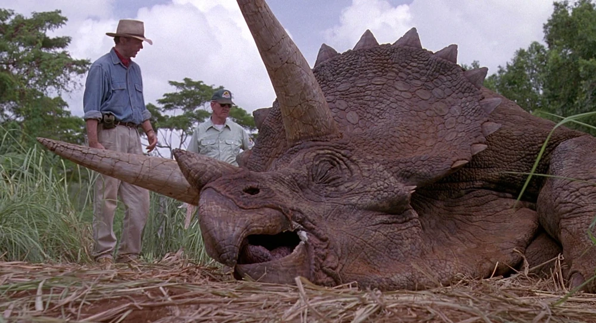

Découvrez le majestueux Tricératops qui a marqué des moment émouvants du film Jurassic Park & World.

Contrairement à leurs ancêtres d'origine, les clones du Triceratops ont des pieds en forme d'éléphant au lieu de griffes prononcées sur trois de ses cinq orteils les plus internes et des cornes jugales sur leurs joues au lieu d'une. Les clones adultes ont des époccipitaux sur leurs collerettes au lieu des juvéniles. Les Triceratops d'InGen mesuraient entre 8,8 et 10,7 mètres de longueur et entre 2,7 et 4,6 mètres de hauteur, les plus gros individus ayant été rencontrés sur Isla Sorna en 2001. Les Triceratops étaient très sociables. Cependant, ils étaient également agressifs et devaient donc être traités avec précaution. Ils avaient deux variantes de peau, l'une étant brune et l'autre beige avec des rayures sur le dos.